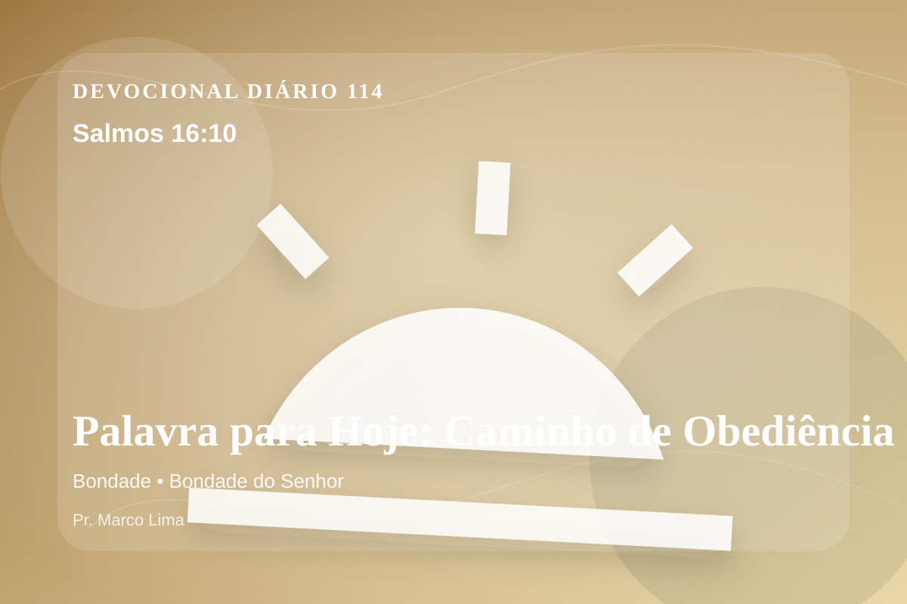

Palavra para Hoje: Caminho de Obediência (Salmos 16:10)
Porque tu não deixarás a minha alma no Xeol, nem permitirás que teu Santo veja a degradação.
Pensamento
Ao voltar a este texto, perceba um detalhe prático: a fé também amadurece quando a resposta demora. Este devocional começa com uma pergunta simples: que área da sua vida precisa ser iluminada por Salmos 16:10 hoje?
Salmos 16:10 chama o coração a ouvir Deus com reverência e responder com fé prática. A Palavra não foi dada para enfeitar pensamentos religiosos, mas para conduzir pessoas reais ao Senhor.
O tema de bondade precisa ser recebido com simplicidade e seriedade. O ponto central não é apenas saber mais, mas viver de modo mais rendido. Este tema aponta para a maneira como Deus forma o coração do Seu povo por meio da Palavra. A aplicação correta não nasce de frases soltas, mas de uma leitura reverente, contextual e obediente do texto bíblico.
Examine se existe orgulho, comparação, medo, culpa escondida ou autossuficiência impedindo sua resposta ao Senhor. A graça não nos humilha para destruir; ela nos quebra para reconstruir em Cristo.
Arrependimento não é apenas sentir peso na consciência; é voltar-se para Deus, abandonar o caminho que entristece o Senhor e confiar que a graça de Cristo é suficiente para perdoar e transformar.
Este é o evangelho que sustenta toda aplicação: Jesus Cristo morreu pelos pecadores, ressuscitou em vitória e chama cada pessoa a responder com fé, arrependimento e uma vida rendida ao Seu senhorio.
Cristo não veio apenas melhorar comportamentos, mas salvar pessoas. Na cruz, Ele trata a culpa; na ressurreição, Ele abre caminho para uma nova vida.
Leve esta Palavra para o ponto mais concreto do seu dia. O fruto da meditação aparecerá quando Cristo governar uma reação, uma prioridade ou uma escolha.
Para Praticar Hoje
- Leia Salmos 16:10 lentamente e destaque uma palavra ou expressão central do texto.
- Confesse a Deus um pecado, resistência ou frieza espiritual que esta Palavra revelou.
- Declare sua fé em Jesus Cristo e pratique hoje uma atitude concreta de arrependimento e obediência.
Oração
Deus fiel, eu agradeço por Salmos 16:10. Que esta verdade marque minha mente, meu coração e minhas ações. Dá-me fé para crer, coragem para obedecer e humildade para reconhecer que tudo é graça. Que isso se torne vida em mim.
{kind=link}